모든 스크린샷을 확인했습니다. 이제 상세한 분석 보고서를 작성하겠습니다.
채널: 직장인들을 위한 사업, 헨 | 길이: 27:30 | 날짜: 20250626
핵심 내용
- 유료 강의 없이도 소싱은 충분히 가능하다. 발화자(헨)는 유료 강의를 듣고 나서도 결국 실전에서 직접 부딪히며 배운 것이 가장 컸다고 강조한다. 강의가 끝나고 나서 실제로 해보지 않으면 아무 소용이 없으며, 이 영상 하나로 소싱의 전 과정을 충분히 이해할 수 있다고 말한다.
- 시장조사가 소싱의 핵심이다. 시장조사를 하지 않으면 어떤 제품을 팔아야 할지, 경쟁 강도가 어떤지, 수익성이 있는지 전혀 판단할 수 없다. 네이버 검색, 네이버 검색광고 키워드 도구, 셀러 분석 도구 등을 활용한 체계적인 시장조사 방법을 실습으로 보여준다.
- 소싱리스트(스프레드시트)를 만들어 데이터 기반으로 판단해야 한다. Google Sheets로 상품명, PC/모바일 검색수, 판매가, 7일 판매량, 6개월 판매량/매출, 판매상품수, 경쟁강도 등의 항목을 정리하여 객관적으로 제품을 비교 분석하는 방법을 상세히 설명한다.
- 중국 사입은 1688닷컴과 배송대행지(창우항공해운 등)를 활용한다. 1688에서 제품을 검색하고, 판매자와 채팅(왕왕)으로 가격 협상을 한 뒤, 배송대행지 주소로 발송하고, 배송대행업체가 한국까지 물류를 처리해주는 전체 프로세스를 실제 화면으로 시연한다.
- 경쟁강도와 시즌성을 반드시 고려해야 한다. 판매상품 수 대비 검색수 비율로 경쟁강도를 계산하고, 시즌 상품(입춘대길, 여름 환경판, 응원봉, 어드벤트캘린더 등)의 경우 해외 배송 기간을 감안해 최소 2~3개월 전에 준비해야 한다는 실전 팁을 제공한다.
- 창우항공해운 같은 배송대행업체를 통해 로켓그로스(쿠팡) 입점까지 원스톱으로 처리할 수 있다. 배송대행 신청, 바코드 작업, 검수/포장 옵션, B/L차지비, 로켓 부착 문서/동봉 문서 등 부가서비스까지 한 곳에서 해결 가능하다.
상세 분석
1. 도입부 - 유료 강의에 대한 현실적 조언
발화자 '헨'은 자신의 집(서재/작업실로 보이는 공간)에서 카메라를 바라보며 이야기를 시작한다. 화면 자막에는 "아니면 강의가 끝나고 나서"라는 문구가 보인다. 헨은 스마트스토어/쿠팡 셀러를 시작하려는 입문자들이 흔히 유료 강의를 먼저 듣는 경향이 있다고 지적한다. 강의를 듣는 것 자체가 나쁜 것은 아니지만, 강의가 끝나고 나서 실제로 실행에 옮기지 않으면 의미가 없다는 점을 강조한다. 이 영상에서 유료 강의에서 다루는 핵심적인 소싱 노하우를 모두 공개하겠다고 선언한다.
2. 시장조사의 중요성
헨은 "하지만 시장 조사를 하지 않는다면"이라는 말과 함께 시장조사의 중요성을 역설한다. 많은 초보 셀러들이 "이게 잘 팔리겠지"라는 감(感)에 의존해서 제품을 선택하는 실수를 저지른다고 말한다. 시장조사 없이 제품을 소싱하면 이미 레드오션인 시장에 뛰어들거나, 수요 자체가 없는 제품을 대량 사입하는 치명적 실수를 할 수 있다. 시장조사는 소싱의 첫 번째이자 가장 중요한 단계이며, 이것을 건너뛰면 나머지 과정이 모두 무의미해진다고 강조한다.
3. 시장조사 방법 - 네이버 쇼핑 검색 활용
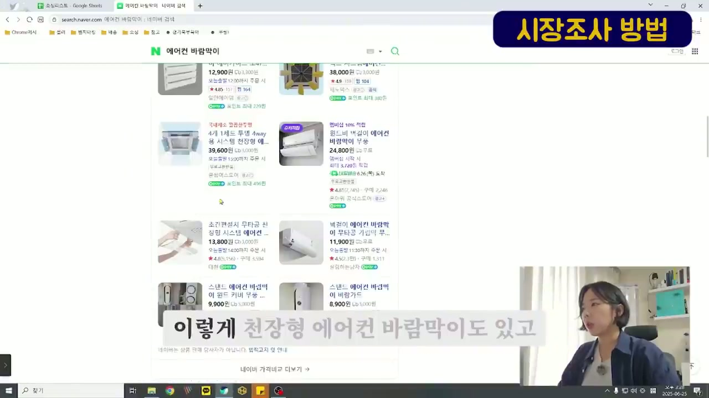
네이버에서 에어컨 바람막이를 검색한 화면
화면에는 네이버(search.naver.com)에서 "에어컨 바람막이"를 검색한 결과가 표시된다. 화면 우측 상단에 노란색 배경으로 "시장조사 방법"이라는 태그가 붙어 있다. 검색 결과에는 다양한 에어컨 바람막이 제품들이 나열되어 있다:
- 천장형 에어컨 바람막이 등 다양한 형태의 제품
- 가격대: 8,900원 ~ 39,600원
- 리뷰 수: 104개 ~ 164개
- 평점: 4.5 ~ 4.9점
- 구매 수: 1,511개 ~ 4,594개
화면 하단 자막에는 "이렇게 천장형 에어컨 바람막이도 있고"라고 표시되어 있다. 헨은 에어컨 바람막이를 예시 제품으로 선택하여, 네이버 쇼핑에서 어떤 형태의 제품들이 있는지 먼저 시장 전체를 파악하는 과정을 보여준다. 에어컨 바람막이에는 천장형, 스탠드형, 벽걸이형 등 세 가지 형태가 있다는 것을 확인할 수 있다.
4. 네이버 검색광고 키워드 도구 활용
헨은 네이버 검색광고(manage.searchad.naver.com)에 접속하는 과정을 보여준다. 화면 왼쪽에는 네이버 로그인 화면이, 오른쪽에는 네이버 검색광고 플랫폼의 로그인 화면이 동시에 표시되어 있다. 자막에는 "여기 뜨는 걸 들어가주시면 로그인을 해주시고요"라고 안내한다. 네이버 검색광고는 무료로 사용할 수 있는 키워드 분석 도구이며, 셀러라면 반드시 활용해야 하는 필수 도구임을 설명한다.
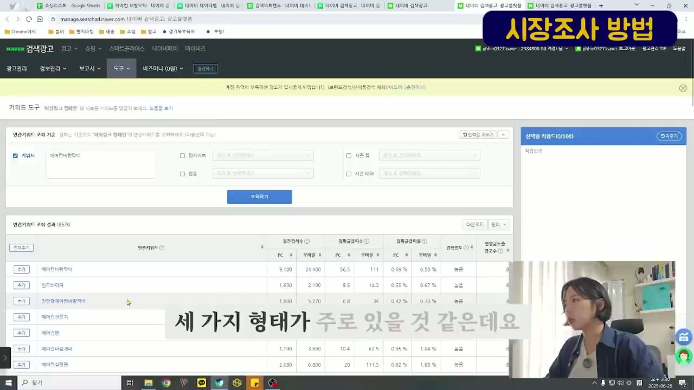
네이버 검색광고 키워드 도구에서 에어컨바람막이 검색 결과
네이버 검색광고의 키워드 도구 화면이 표시된다. "에어컨바람막이"를 키워드로 검색한 결과, 연관키워드 조회 성과가 85개로 나타난다. 주요 데이터:
- 에어컨바람막이: PC 9,100 / 모바일 24,400 / 월평균클릭수 PC 56.5 / 모바일 111 / 월평균클릭률 PC 0.69% / 모바일 0.50% / 경쟁정도 높음
- 윈드바이저: PC 1,600 / 모바일 2,190 / 월평균클릭수 PC 8.5 / 모바일 14.3 / 월평균클릭률 PC 0.55% / 모바일 0.67% / 경쟁정도 높음
- 천장형에어컨바람막이: PC 1,800 / 모바일 5,270 / 월평균클릭수 PC 6.8 / 모바일 34 / 월평균클릭률 PC 0.42% / 모바일 0.70% / 경쟁정도 높음
- 에어컨선풍기: 검색량 확인 가능
- 에어컨바람가리개, 에어컨보관함 등 관련 키워드도 함께 표시
자막에는 "세 가지 형태가 주로 있을 것 같은데요"라고 하며, 천장형/스탠드형/벽걸이형으로 나누어 각각의 검색량을 파악해야 한다고 설명한다.
5. 소싱리스트(스프레드시트) 작성법
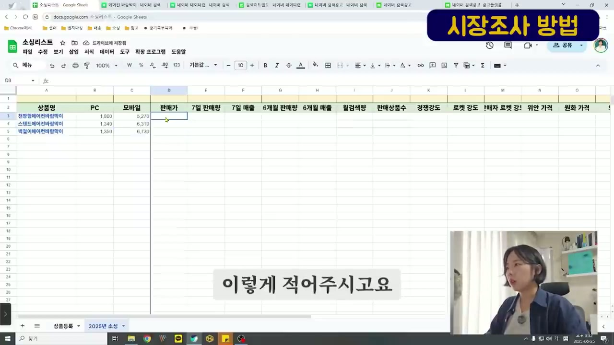
Google Sheets 소싱리스트 초기 설정
화면에는 Google Sheets로 만든 "소싱리스트" 스프레드시트가 표시된다. 시트 하단에는 "상품등록"과 "2025년 소싱" 탭이 보인다. 스프레드시트의 컬럼 헤더는 다음과 같다:
- A: 상품명 / B: PC / C: 모바일 / D: 판매가 / E: 7일 판매량 / F: 7일 매출 / G: 6개월 판매량 / H: 6개월 매출 / I: 월검색량 / J: 판매상품수 / K: 경쟁강도 / L: 로켓 강도 / M: 1매자 로켓 강! / N: 위안 가격 / O: 원화 가격
이미 입력된 데이터:
- 행 3: 천장형에어컨바람막이 - PC 1,800 / 모바일 5,270
- 행 4: 스탠드에어컨바람막이 - PC 1,340 / 모바일 6,310
- 행 5: 벽걸이에어컨바람막이 - PC 1,350 / 모바일 6,730
자막에는 "이렇게 적어주시고요"라고 하며, 네이버 키워드 도구에서 확인한 검색수 데이터를 소싱리스트에 옮겨 적는 과정을 보여준다.
6. 상품 상세 분석 - 판매가/원산지 확인
네이버 스마트스토어의 한 제품 상세페이지가 표시된다. 상품정보 탭에서 확인할 수 있는 정보:
- 상품번호: 6692342245
- 상품상태: 신상품
- 제조사: 기타
- 브랜드: 기타
- 모델명: 투명 천장형 시스템 에어컨 바람막이 가림막 날개
- 이벤트: 시게임 내서 최객한 디자인프텍스
- 원산지: 중국OEM
- 배송기간: 오늘출발 14:00 마감, 6/28(토) 도착 확률 98%
자막에는 "그래서 한번 13800원이고 원산지는 중국산이네요"라고 표시된다. 판매가 13,800원인 이 제품의 원산지가 중국산(중국OEM)임을 확인하는 것이 중요한데, 이는 1688 등에서 직접 사입하면 원가를 크게 낮출 수 있다는 의미이다.
7. 셀러 분석 도구 활용 - 판매량/매출 파악
별도의 셀러 분석 도구(크롬 확장 프로그램으로 추정)를 활용한 화면이 표시된다. "초간편설치 무타공 천장형 시스템 에어컨 바람막이 가림막 윈드플렉스" 제품의 데이터:
- 판매가: 13,800원 / 배송비 3,000원
- 대한 프리지방
- 리뷰: 5,158개 / 평점: 4.8 / 찜: 1230
- 상품등록일: 2022-05-19
- 예상판매량(7일): 542건 / 예상매출(7일): 7,479,600원
- 최근 1주간 527명이 구매 했어요! / 최근 3개월간 190명이 재구매 했어요!
- 태그: #생활, #에어컨바람막이, #천장형에어컨바람막이, #에코이, #기업사, #천장형시스템에어컨, #바람막이, #에어이카드, #프로팬막이, #바람가리
자막에는 "그리고 6개월 판매량도 한번 보겠습니다"라고 하며, 7일 단위뿐 아니라 6개월 장기 판매 데이터도 확인해야 함을 강조한다.
8. 소싱리스트 데이터 채우기 - 경쟁강도 계산
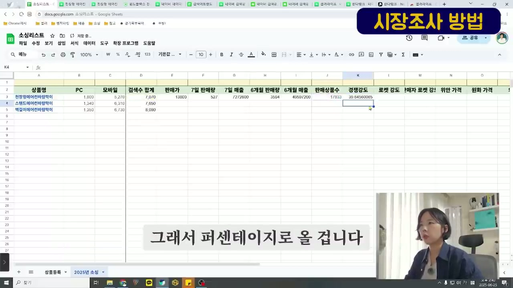
소싱리스트에 데이터 입력 중 - 경쟁강도 계산
소싱리스트 스프레드시트에 데이터가 채워지고 있다. 컬럼 헤더가 더 상세해져 있으며, "검색수 합계" 컬럼이 추가되었다:
- 천장형에어컨바람막이: 검색수 합계 7,070 / 판매가 13,800 / 7일 판매량 527 / 7일 매출 7,272,600 / 6개월 판매량 3,594 / 6개월 매출 49,597,200 / 판매상품수 17,833 / 경쟁강도 39.65
- 스탠드에어컨바람막이: 검색수 합계 7,650 / 판매가 9,900 / 7일 판매량 318 / 7일 매출 3,148,200 / 6개월 판매량 1,063 / 6개월 매출 10,523,700
- 벽걸이에어컨바람막이: 검색수 합계 8,080 / 판매가 11,900
자막에는 "그래서 퍼센테이지로 올 겁니다"라고 하며, 경쟁강도를 퍼센트로 계산하는 방법을 설명한다. 경쟁강도는 판매상품수를 검색수 합계로 나눈 값으로, 이 수치가 높을수록 경쟁이 치열하다는 의미이다.
9. 경쟁강도 비교 분석
세 가지 에어컨 바람막이 제품의 데이터가 모두 채워진 소싱리스트가 표시된다:
- 천장형에어컨바람막이: 판매가 13,800 / 7일 판매량 527 / 7일 매출 7,272,600 / 6개월 판매량 3,594 / 6개월 매출 49,597,200 / 판매상품수 17,833 / 경쟁강도 39.65
- 스탠드에어컨바람막이: 판매가 9,900 / 7일 판매량 318 / 7일 매출 3,148,200 / 6개월 판매량 1,063 / 6개월 매출 10,523,700 / 판매상품수 6,711 / 경쟁강도 113.99
- 벽걸이에어컨바람막이: 판매가 11,900 / 7일 판매량 258 / 7일 매출 3,070,200 / 6개월 판매량 1,311 / 6개월 매출 15,600,900
자막에는 "6711개를 팔고 있습니다"라고 표시된다. 스탠드형의 경쟁강도가 113.99로 매우 높아, 검색수 대비 판매자가 너무 많다는 것을 의미한다.
10. 최종 데이터 비교 및 초보자 관점 분석
완성된 소싱리스트 전체가 보인다:
- 천장형에어컨바람막이: 경쟁강도 39.65 (가장 낮음 = 가장 기회가 많음)
- 스탠드에어컨바람막이: 경쟁강도 113.99 (높음)
- 벽걸이에어컨바람막이: 판매상품수 34,953 / 경쟁강도 23.12
자막에는 "아직 초보자였기 때문에"라고 표시되며, 헨은 초보자 시절 이런 데이터를 보고 어떤 제품을 선택했는지 이야기한다. 위안 가격, 원화 가격 컬럼도 있어서 최종적으로 원가와 판매가의 마진까지 계산할 수 있도록 설계되어 있다.
11. 실제 소싱 경험 공유 - 다양한 제품 사례
소싱리스트에 에어컨 바람막이 외에도 실제로 헨이 소싱했던 다양한 상품들이 추가되어 있다:
- 행 6: 입춘첩 입춘대길 - 검색수 합계 121,490 / 판매가 22,000 / 7일 판매량 0 / 6개월 판매량 217 / 6개월 매출 4,774,000 / 판매상품수 5,210 / 경쟁강도 2,331.86
- 행 7: 여름 환경판 - 검색수 합계 70/0 / 판매가 35,900 / 7일 판매량 20 / 7일 매출 718,000 / 6개월 판매량 216 / 6개월 매출 7,754,400 / 판매상품수 3,310 / 경쟁강도 213.60
- 행 8: 응원봉 - 검색수 합계 166,700 / 판매가 8,000 / 7일 판매량 447 / 7일 매출 3,576,000 / 6개월 판매량 5,330 / 6개월 매출 42,640,000 / 판매상품수 53,389 / 경쟁강도 312.24
- 행 9: 어드벤트캘린더 - 검색수 합계 267,700 / 판매가 13,500 / 7일 판매량 18 / 7일 매출 243,000 / 6개월 판매량 24 / 6개월 매출 324,000 / 판매상품수 33,302 / 경쟁강도 803.86
자막에는 "이 부분은 제가 실제로 소싱을 했을 때"라고 하며, 이 데이터들이 실제 본인의 소싱 경험에서 나온 것임을 밝힌다.
12. 시즌 상품의 특성 - 입춘대길 사례
네이버에서 "입춘대길"을 검색한 화면이 보인다. 입춘대길은 입춘(봄의 시작) 때 문에 붙이는 전통 장식으로, 캘리그라피, 붓어는법, 한자, 인사말, 2025년 등의 관련 키워드가 표시된다. 이미지 검색 결과에는 다양한 입춘대길 서예 작품들이 보인다 - 한자로 "立春大吉"이라고 쓴 것, 캘리그라피 스타일, 현대적 디자인 등 다양한 형태가 있다.
자막에는 "사실 붙이는 법 쓰는 법"이라고 하며, 입춘대길이 시즌 상품의 대표적 사례임을 설명한다. 시즌 상품은 해당 시즌에만 폭발적으로 팔리고 시즌이 지나면 판매가 0에 수렴한다.
13. 시즌 상품 분석 - 여름 환경판
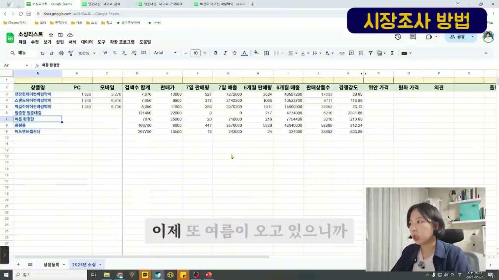
소싱리스트에서 여름 환경판 데이터 확인
소싱리스트로 돌아와 "여름 환경판" 행이 선택되어 있다. 자막에는 "이제 또 여름이 오고 있으니까"라고 표시된다. 여름 환경판은 유치원, 어린이집, 학교 등에서 여름 시즌에 교실 환경을 꾸미는 데 사용하는 장식물이다. 이 역시 시즌성 상품으로, 여름이 다가오면 수요가 급증한다.
14. 여름 환경판 상품 탐색
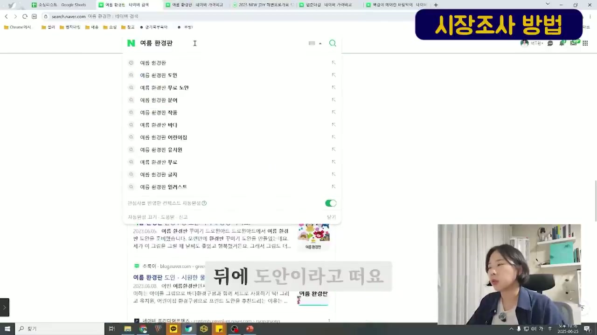
네이버에서 여름 환경판 검색 및 관련 키워드
네이버에서 "여름 환경판"을 검색한 화면이다. 자동완성 검색어로 다음과 같은 키워드들이 표시된다:
- 여름 현간판 / 여름 환경판 도인 / 여름 환경판 무료 노안 / 여름 현간판 분어 / 여름 환경판 작중 / 여름 환경판 바다 / 여름 현간판 어린이집 / 여름 환경판 유치원 / 여름 환경판 무료 / 여름 현간판 글자 / 여름 환경판 일러스트
자막에는 "뒤에 도안이라고 떠요"라고 하며, 환경판은 도안(디자인)이 중요한 상품이라 이런 제품들을 직접 만들어서 판매할 수도 있다고 설명한다.
스마트스토어에서 판매 중인 여름 환경판 상품이다. "2025 NEW [DIY 해변으로기요 120x90] 어린이집 유치원 환경판 여름환경판" 상품이 28,500원(42,200원에서 할인)에 판매되고 있다. 리뷰 100개, Q&A 5개가 있다. 상품 상세에는 블로그 링크가 포함되어 있고, "HELLO SUMMER" 디자인의 캘리쉬머 제목글자 도안 공유 블로그 포스트가 연결되어 있다.
자막에는 "이런 제품들을 다 만들어서 이렇게"라고 표시되어, 핸드메이드형 상품도 소싱의 한 방법임을 시사한다.
15. 응원봉 - 트렌드 의존형 상품 분석
네이버에서 "응원봉"을 검색한 결과 화면이다. 다양한 LED 응원봉, 야광봉 상품들이 표시된다:
- 주문제작 인쇄 아크릴 LED 야광봉: 5,000원
- 응원봉 주문제작 감리 우수봉: 19,800원 (구매 1,515건)
- LED 콘서트 주문제작 원형 아구얼 응원봉: 18,000원 (구매 1,123건)
- 야광봉 힘강말찌 야광 팔찌 응원봉: 1,470원
- LED 하트 응원봉 야광봉: 최저 900원
자막에는 "실제로 되게 많이 떨어졌어요"라고 하며, 응원봉의 판매량이 시기에 따라 크게 변동한다는 점을 설명한다. 콘서트/이벤트 시즌에는 폭발적으로 팔리지만 비시즌에는 급감하는 트렌드 의존형 상품이다.
16. 어드벤트캘린더 - 해외 배송 기간 고려 필수
네이버 쇼핑에서 "어드벤트캘린더"를 가격비교한 화면이다. 다양한 크리스마스 어드벤트캘린더 상품들이 보인다:
- 어드벤트 캘린더 소품 번디스 장식 만들기 DIY: 최저 19,650원 (판매처 47곳)
- 어드벤시 캘린더 만들기 교안선물 DIY: 최저 18,500원 (판매처 59곳)
- 에리뇨터 2024 어드벤트 캘린더 로션 에디션 & 유럽러 크리스마스 선물 세트: 162,900원
- 포켓몬 어드벤트 캘린더 피규어 크리스마스 DIY 번디스 만들기: 8,000원
자막에는 "왜냐하면 해외 배송 같은 경우는"이라고 하며, 어드벤트캘린더처럼 크리스마스 시즌 상품은 해외(중국)에서 사입할 경우 배송 기간이 2~4주 걸리므로, 최소 10~11월에는 이미 상품이 준비되어 있어야 한다고 강조한다.
17. 소싱리스트 최종 정리 및 판단
소싱리스트의 최종 화면이다. 자막에는 "실제로 판매하고 있는 상품"이라고 표시된다. 모든 상품의 데이터가 정리되어 있으며, 각 상품의 판매상품수와 경쟁강도를 비교할 수 있다:
- 응원봉: 판매상품수 53,389 / 경쟁강도 312.24
- 어드벤트캘린더: 판매상품수 33,302 / 경쟁강도 803.86
경쟁강도가 높은 상품일수록 진입이 어렵고, 낮은 상품일수록 기회가 있다는 원칙을 재차 설명한다.
18. 사입할 제품 결정 후 중국 사입 방법으로 전환
자막에 "제가 사입할 제품을 정한 다음에"라고 표시되며, 시장조사를 통해 제품을 선정한 후 실제로 중국에서 사입하는 방법을 설명하는 파트로 넘어간다. 화면 우측 상단의 태그도 "중국 사입 방법"으로 변경된다.
19. 1688닷컴을 활용한 중국 사입
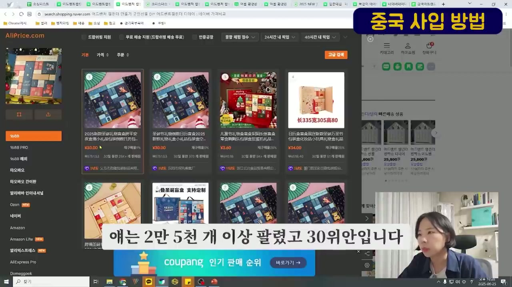
AliPrice를 통한 1688 검색 화면
화면에는 AliPrice.com이라는 도구를 통해 1688닷컴의 상품을 검색하는 화면이 표시된다. 좌측 사이드바에는 다양한 중국 쇼핑 플랫폼이 나열되어 있다:
- 1688 (현재 선택됨)
- 1688 PRO
- 1688 매칭
- 타오바오
- 타오바오 간이판
- 알리바바 인터내셔널
- Ozon
- 네이버
- Amazon
- Amazon Lite
- 알리익스프레스
- AliExpress Pro
- Domeggook
크리스마스 어드벤트캘린더 관련 상품들이 검색되어 있으며, 가격은 위안화로 표시된다 (30위안, 3.60위안, 34위안 등). 화면 하단에는 "애는 2만 5천 개 이상 팔렸고 30위안입니다"라는 자막이 표시되며, 동시에 쿠팡 인기 판매 순위 배너도 보인다.
헨은 1688에서 상품을 검색할 때 AliPrice라는 크롬 확장 프로그램을 사용하면 네이버/쿠팡 가격과 비교가 쉽다고 설명한다. 중국 현지 도매가는 국내 소매가의 1/3~1/5 수준인 경우가 많다.
20. 1688에서 주문하기 - 배송대행지 주소 입력
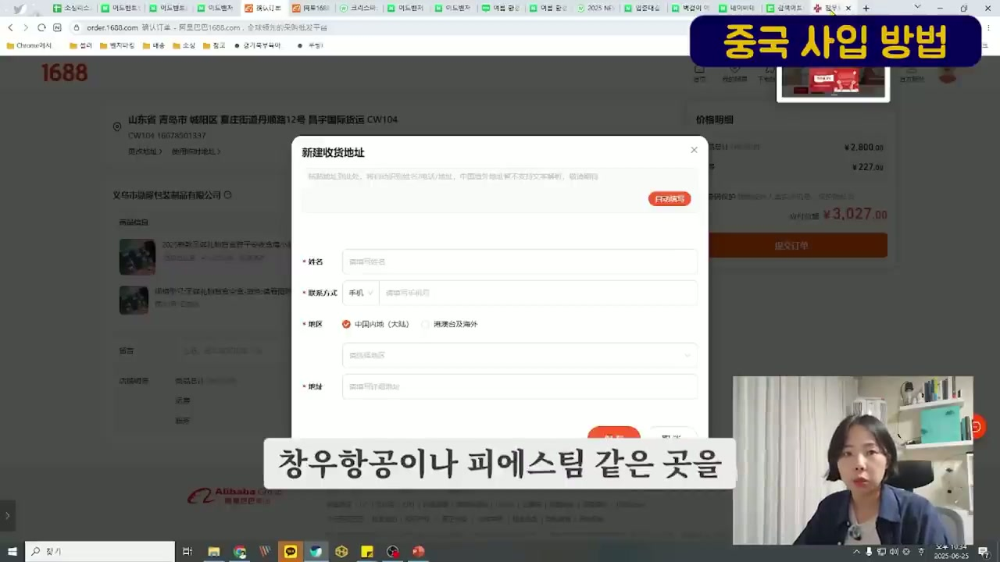
1688 주문 화면 - 배송 주소 입력
1688닷컴(order.1688.com)의 주문 확인 페이지가 표시된다. "新建收货地址"(새 배송 주소 입력) 팝업이 열려 있다. 입력 필드:
- 姓名(이름)
- 联系方式(연락처): 手机(핸드폰)
- 地区(지역): 中国内地(大陆) / 港澳台及海外
- 주소 입력란
우측에는 가격 명세가 보인다: 2,800위안, 227위안 등. 합계 3,027위안.
자막에는 "창우항공이나 피에스팀 같은 곳을"이라고 하며, 배송대행업체인 창우항공해운이나 피에스팀 같은 곳의 중국 현지 물류센터 주소를 배송지로 입력해야 한다고 설명한다.
21. 배송대행업체 - 창우항공해운 연동
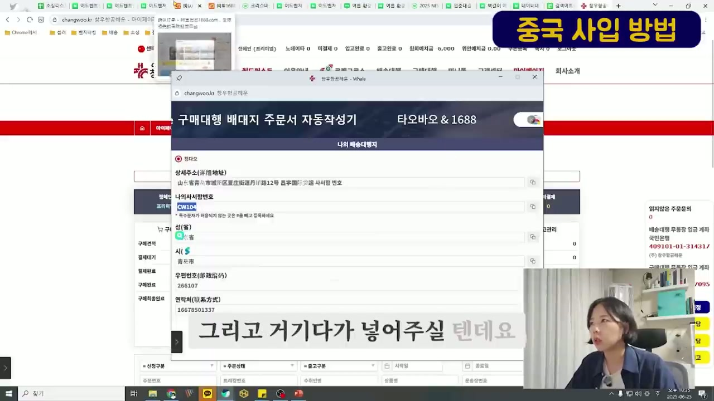
창우항공해운 구매대행 배대지 주문서 자동작성기
창우항공해운(changwoo.kr)의 "구매대행 배대지 주문서 자동작성기 - 타오바오 & 1688" 화면이 표시된다. "나의 배송대행지" 섹션에 다음 정보가 표시된다:
- 청다오(靑島) 센터
- 상세주소: 山东省青岛市城阳区...쇼12号 昌宇国际货运 사서함 번호
- 나의사서함번호: CW104
- 성(省): Q省
- 시(市): 青岛市
- 우편번호(邮政编码): 266107
- 연락처(联系方式): 16678501337
자막에는 "그리고 거기다가 넣어주실 텐데요"라고 하며, 이 배송대행지 주소를 1688 주문 시 배송지로 입력하면 된다고 설명한다. 좌측에는 구매견적, 결제대기, 결제완료, 구매완료, 구매취소완료 등의 주문 상태 관리 메뉴가 보인다.
22. 1688 판매자와의 채팅 - 가격 협상
1688의 메신저(旺旺, 왕왕) 채팅 화면이 표시된다. "勤隆包装有限公司"(근릉포장유한공사)라는 판매자와 대화 중이다. 판매자 정보:
- 우측에 판매자 프로필이 표시됨: 义乌市勤隆包装制品有限公司
- 会员勋章: 별 1개
- 经营模式: 生产厂家 (생산 공장)
- BSR与同行均值比价:
- 货据相符: 值于균치 5.11%↓
- 响应速度: 高于均치 16.19%↑
- 发货速度: 高于均치 9.53%↑
- 回头率: 53.00%
채팅 내용에서 판매자가 인사 메시지를 보내며, 주문에 대해 안내하고 있다. 주문번호(订单号): 28003104150270124475
자막에는 "일단 주문을 던집니다"라고 하며, 1688에서는 일단 주문을 넣고 나서 채팅으로 세부 사항(수량 할인, 커스텀 등)을 협상할 수 있다고 설명한다.
23. 가격 협상 성공 사례
같은 채팅 화면에서 가격 협상이 이루어진 결과가 보인다. 판매자가 "好的"(좋습니다)라고 응답한 후, "订单已改价"(주문 가격이 변경되었습니다)라는 메시지가 표시된다:
- 개가后(변경 후) ¥2900.00 ← 원래 ¥3,027.00에서 할인
- 수취인: CW104
- 목적: 16678501337
- 地址: 山东省 青岛市 城阳区
판매자가 "老板改好了"(사장님, 수정 완료했습니다)라고 메시지를 보낸 것도 확인된다.
자막에는 "그리고 이제 결제 부분을 한번 보겠습니다"라고 하며, 3,027위안에서 2,900위안으로 약 127위안(약 2만 5천원) 할인받은 것을 보여준다.
24. 배송대행업체 활용 - 창우항공해운 서비스 소개
창우항공해운 웹사이트의 메인 페이지가 표시된다. 상단 메뉴에는: 월드퍼스트, 이용안내, 로켓그로스, 배송대행, 구매대행, 미니몰, 고객센터, 마이페이지, 회사소개가 있다.
주요 서비스 배너들:
- 현금영수증 세금계산서 자동발행 - 위안예치금으로 구매대행 신청하고 소명자로(지출증빙서) 세금계산서 자동발행
- 1688 처음 해보는 쉬운 소싱 - 월드퍼스트로 바로 결제
- 쿠팡 로켓그로스 서비스 오픈 - 궁금한 사항은 고객센터로 문의
- 신규회원가입시 쿠폰 - 배송건 2,000원 사용가능
자막에는 "프로세스에 대해서 말씀을 드릴게요"라고 하며, 1688 주문 → 배송대행지 입고 → 한국 배송의 전체 프로세스를 설명하겠다고 한다.
25. 배송대행 신청 - 상품정보 입력
창우항공해운의 배송대행 > 배송대행 신청 페이지가 표시된다. 상품정보 입력 섹션:
- 쇼핑몰: www.1688.com / 1688
- 쇼핑몰 주문고유코드: 28003104150270124475
- 트래킹번호(Tracking No): 입력란
- 카테고리: 디지털/컴퓨터/서적/문구> 종이 상자 / PAPER BOX
- 이미지 업로드 버튼
- 수량: 100 / 원가(¥): 2700 / 상품 옵션 정보
- 1688 상품 URL: detail.1688.com/offer/... 링크
- 바코드 라벨 파일 업로드 기능: "바코드라벨은 PDF/이미지파일로 업로드하세요"
금액정보 입력: 총 수량 100 / 금액 ¥ 2700.00 / 금액 $
자막에는 "여기서 바코드 작업을 할 수도 있다고 그랬죠"라고 하며, 배송대행업체에서 바코드 라벨 작업까지 대행해줄 수 있다고 설명한다. 이는 쿠팡 로켓그로스 입점 시 필수적인 바코드 부착 작업을 별도로 하지 않아도 된다는 장점이 있다.
26. 입고 처리 및 물류 관리
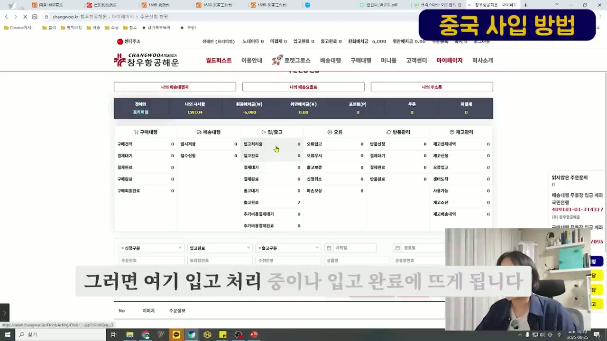
창우항공해운 마이페이지 - 주문신청 현황
창우항공해운 마이페이지의 주문신청 현황 화면이다. 상단에 정헤인(프리미엄) 회원의 계정 정보가 표시된다:
- 나의 사서함: CW104
- 원화예치금(W): -6,000
- 위안예치금(¥): 0.00
- 포인트(P): 0
- 쿠폰: 0
주문 관리 섹션:
- 구매대행: 구매견적 0 / 결제대기 0 / 결제완료 0 / 구매완료 0 / 구매취소완료 0
- 배송대행: 임시저장 0 / 접수신청 0
- 입/출고: 입고처리중 / 입고완료 / 결제대기 / 결제완료 / 출고대기 0 / 출고완료 7
- 오류: 오류입고 / 오류무시 / 출고보류 / 신청취소
- 반품관리: 반품신청 / 결제대기 / 결제완료 / 반품완료
- 재고관리: 재고전체내역 / 재고신청 / 오류입고 / 센터도착 / 사용가능 / 재고소진 / 재고배송내역
자막에는 "그러면 여기 입고 처리 중이나 입고 완료에 뜨게 됩니다"라고 설명한다. 중국에서 발송한 물건이 배송대행지에 도착하면 입고 처리 중 → 입고 완료로 상태가 변경되며, 이후 한국으로의 출고를 진행할 수 있다.
27. 부가서비스 옵션 - 로켓그로스 대응
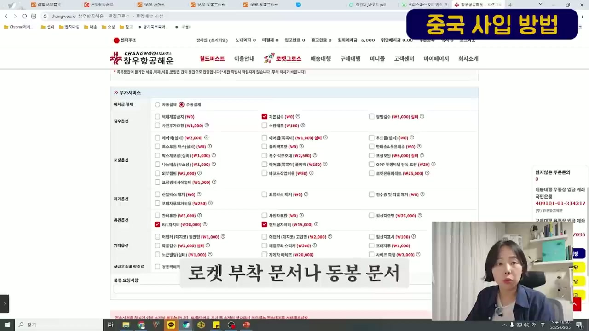
창우항공해운 로켓그로스 배송 신청 - 부가서비스
창우항공해운의 로켓그로스 > 로켓배송 신청 페이지의 부가서비스 섹션이 표시된다. 매우 다양한 옵션들이 나열되어 있다:
매치금 결제: 자동결제 / 수동결제
검수옵션:
- 택배개봉검지(W0) / 기본검수(W0) / 평탈검수(W2,000 실비)
- 사진추가요청(W1,000) / 수량체크(W100)
- 에어캡(실비)(W2,000) / 에어칸(뽁뽁이)(W1,000 실비) / 우드틀(실비)(W0)
- 특수우트 박스(실비)(W0) / 폴리백포장(W0) / 택배쓰&묶음택송(W0)
포장옵션:
- 박스재포장(실비)(W1,000) / 특수 각포토대(W2,500) / 포장모인(W6,000 실비)
- 나눔배송(박스닝)(W1,000) / 에이컨(뽁뽁이) 플라이백(W150) / OPP 투명비닐 단독 포장(W30)
- 외부라벨링(W2,000) / 바코드작업비용(W50) / 로켓전용파레트(W25,000)
- 포장봉재사작업비(W1,000)
제거옵션:
- 신발박스 제거(W0) / 외류박스 제거(W0) / 명수중 및 라벨 제거(W0)
- 포장자투재거비용(W250)
통관옵션:
- 간이통관(W3,000) / 사업자통관(W0) / 원산지증형(W25,000)
- B/L차지비(W26,000) (체크됨) / 밴드장차지비(W15,000)
기타옵션:
- 어댑터(돼지코) 일반형(W1,000) / 어댑터(돼지코) 고급형(W2,000) / 원산지표시(W100)
- 작동검수(W2,000 실비) / 배송주의 스티커(W200) / 포대자루(W1,000)
- 노브랜딩(실비)(W1,000) / 지게차 배달(W20,000) / 사이즈 측정(W2,000)
자막에는 "로켓 부착 문서나 동봉 문서"라고 하며, 쿠팡 로켓그로스 입점 시 필요한 로켓 부착 문서, 동봉 문서 작업도 배송대행업체에서 처리해줄 수 있다고 설명한다.
28. 마무리 - 배송대행업체의 다양한 부가 서비스
헨이 다시 카메라를 바라보며 마무리 발언을 한다. 자막에는 "되게 많은 부가 서비스들이 있는데"라고 표시된다. 배송대행업체들이 제공하는 부가 서비스가 매우 다양하며, 검수, 포장, 바코드 작업, 라벨링, 통관 등 셀러가 직접 하기 어려운 작업들을 대행해준다고 정리한다. 초보 셀러는 이런 서비스들을 적극 활용하면 혼자서도 충분히 중국 사입 → 국내 판매의 전 과정을 운영할 수 있다고 격려한다.
주요 인용 및 발언
"아니면 강의가 끝나고 나서" - 유료 강의를 듣는 것 자체보다 강의 후 실행이 중요하다는 맥락
"하지만 시장 조사를 하지 않는다면" - 시장조사 없이는 소싱의 성공을 보장할 수 없다는 경고
"세 가지 형태가 주로 있을 것 같은데요" - 에어컨 바람막이(천장형/스탠드형/벽걸이형)를 예시로 시장을 세분화해서 분석해야 한다는 설명
"그래서 한번 13800원이고 원산지는 중국산이네요" - 국내 판매가와 원산지를 확인하여 중국 직접 사입의 마진 가능성을 판단
"6711개를 팔고 있습니다" - 판매상품수가 많으면 경쟁이 치열하다는 의미
"아직 초보자였기 때문에" - 본인도 초보자에서 시작했으며, 누구나 이 방법을 따라할 수 있다는 격려
"이 부분은 제가 실제로 소싱을 했을 때" - 이론이 아닌 실전 경험에 기반한 데이터임을 강조
"애는 2만 5천 개 이상 팔렸고 30위안입니다" - 1688에서의 도매 물량과 가격 수준
"창우항공이나 피에스팀 같은 곳을" - 실제 사용하는 배송대행업체 이름을 공개
"일단 주문을 던집니다" - 1688에서의 주문 프로세스에 대한 실전적 조언
"되게 많은 부가 서비스들이 있는데" - 배송대행업체의 서비스를 잘 활용하라는 조언
결론 및 시사점
핵심 메시지: 스마트스토어/쿠팡 셀러로서의 소싱은 유료 강의 없이도 체계적인 시장조사와 데이터 분석을 통해 충분히 독학할 수 있다. 핵심은 "감"이 아닌 "데이터"에 기반한 의사결정이다.
실용적 시사점:
- 시장조사 프로세스: 네이버 검색 → 네이버 검색광고 키워드 도구 → 셀러 분석 도구 → 소싱리스트 작성의 순서로 체계적으로 접근해야 한다.
- 경쟁강도 분석이 핵심: 단순히 검색량이 많다고 좋은 상품이 아니며, 검색수 대비 판매상품수(경쟁강도)를 반드시 계산해야 한다. 경쟁강도가 낮은 상품이 진입 기회가 더 크다.
- 시즌 상품 전략: 입춘대길, 여름 환경판, 응원봉, 어드벤트캘린더 등 시즌 상품은 수요 폭발 시기를 정확히 예측하고, 중국 사입 시 배송 기간(2~4주)을 역산해서 최소 2~3개월 전에 준비해야 한다.
- 중국 사입 루트: 1688닷컴에서 상품 검색 → AliPrice 등 도구로 가격 비교 → 왕왕 채팅으로 가격 협상 → 배송대행지 주소로 주문 → 배송대행업체가 검수/포장/바코드/통관/국내배송 처리.
- 배송대행업체 활용: 창우항공해운 같은 업체를 통해 검수, 포장, 바코드 라벨링, B/L 처리, 로켓그로스 입점용 서류 작업까지 원스톱으로 처리할 수 있어, 개인 셀러도 충분히 운영 가능하다.
- 원가 절감 가능성: 국내 소매가 13,800원인 에어컨 바람막이 제품의 1688 도매가는 약 27~30위안(한화 약 5,000~6,000원) 수준으로, 적절한 마진 확보가 가능하다.